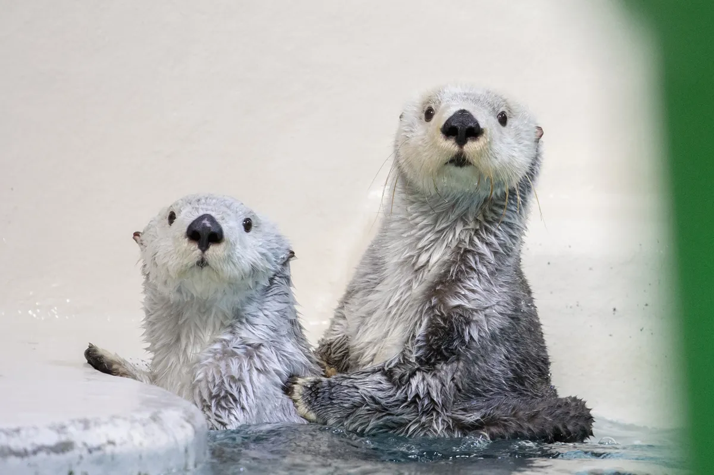
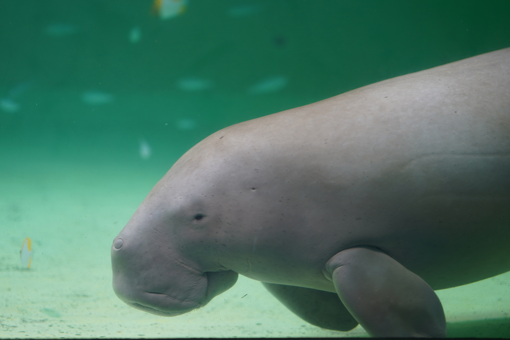
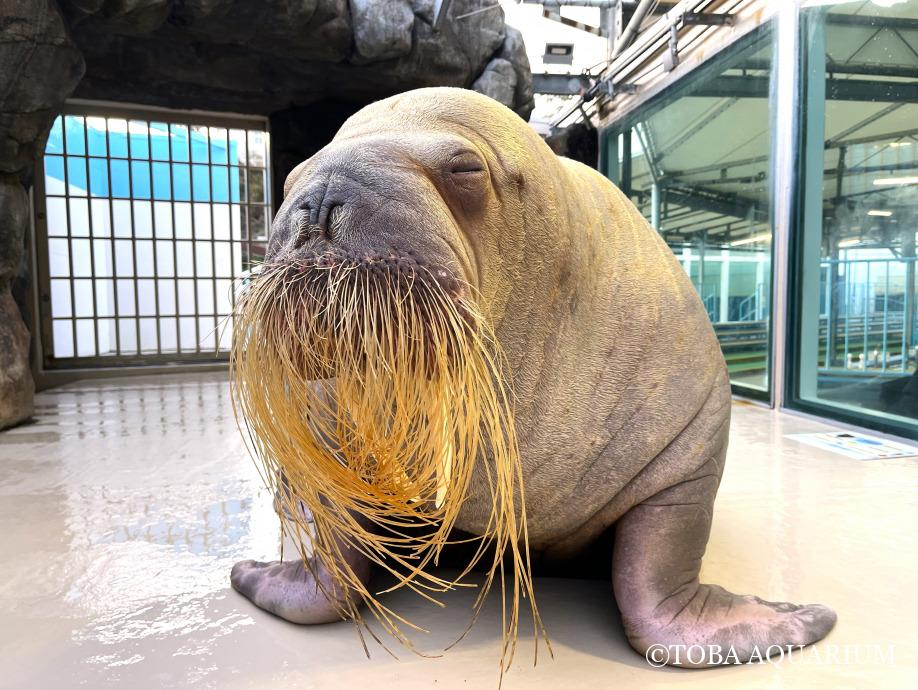
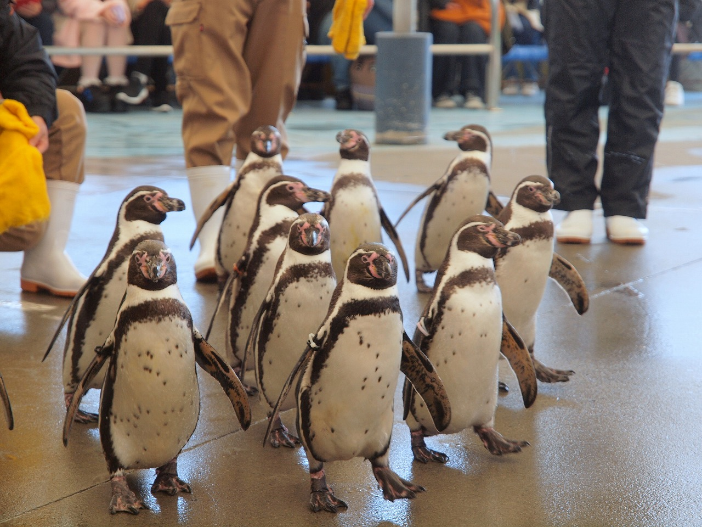

🕒 タイムテーブル
| 09:00 | 入館 |
| 09:40 | 🦦 ラッコお食事タイム |
| 10:30 | 🦭 海獣の王国 |
| 11:00 | 🦭 セイウチお食事タイム |
| 12:00 | 🐧 ペンギン散歩 |
※イベント時間は変更になる場合があります
🦦 絶対見たい生き物

ラッコ
鳥羽水族館のスター

ジュゴン
国内で見られる貴重な存在

セイウチ
迫力満点の人気者

ペンギン
子ども人気No.1
📍 Googleマップ
🌐 最新情報はこちら
お食事タイムやイベント時間は変更になることがあります。 当日は公式サイトもチェックしておくと安心です。